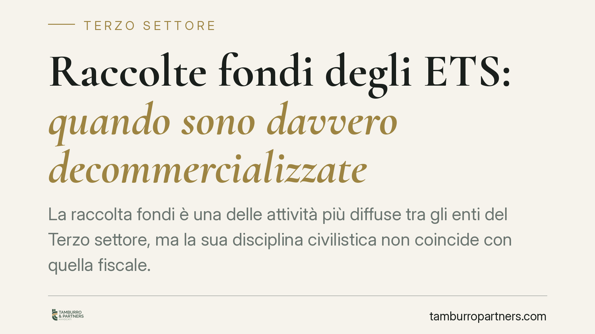

Raccolte fondi degli ETS: quando sono davvero decommercializzate
La raccolta fondi è una delle attività più diffuse tra gli enti del Terzo settore, ma la sua disciplina civilistica non coincide con quella fiscale. Un conto è poterla svolgere, altro è beneficiare della decommercializzazione. Chiarire quando i fondi raccolti non concorrono al reddito evita contestazioni e aiuta a impostare correttamente la contabilità dell'ente.

Il nodo: ammissibilità civilistica e vantaggio fiscale non coincidono
Molti enti leggono la raccolta fondi come un'attività automaticamente esente. Non è così. Occorre tenere distinti due piani che la normativa regola in modo separato.
Sul piano civilistico, l'art. 7 del Codice del Terzo settore (D.lgs. 117/2017) ammette espressamente la raccolta fondi anche in forma organizzata e continuativa, mediante la cessione o erogazione di beni o servizi di modico valore, impiegando risorse proprie e di terzi. In altre parole, l'ETS può raccogliere fondi in modo strutturato e abituale: la legge non lo vieta.
Altro è il trattamento fiscale. Il vantaggio della decommercializzazione — cioè la non concorrenza dei fondi raccolti alla formazione del reddito — non discende dall'art. 7, ma dall'art. 79, comma 4, lett. a) del medesimo Codice. Questa norma richiede un presupposto preciso: l'occasionalità.
Inquadramento normativo
L'art. 79, comma 4, lett. a) prevede che non concorrono alla formazione del reddito dei soggetti del Terzo settore i fondi pervenuti a seguito di raccolte pubbliche effettuate occasionalmente, anche mediante offerte di beni di modico valore o di servizi, in concomitanza di celebrazioni, ricorrenze o campagne di sensibilizzazione.
Da qui si ricavano i tre requisiti che devono sussistere congiuntamente perché la raccolta benefici della decommercializzazione:
- occasionalità dell'iniziativa;
- apertura al pubblico della raccolta;
- collegamento a una celebrazione, ricorrenza o campagna di sensibilizzazione specifica.
Se anche uno solo di questi elementi manca, la raccolta esce dal perimetro della lettera a) e il relativo introito va valutato secondo le regole ordinarie: una raccolta continuativa dietro corrispettivo, strutturata come scambio stabile bene/servizio contro denaro, tende a configurare attività di natura commerciale, con conseguente concorrenza al reddito.
Implicazioni pratiche: l'esempio della pesca e del banco vendita
L'esempio più chiaro è il confronto tra due iniziative apparentemente simili.
La pesca di beneficenza allestita in occasione della festa patronale — una tantum, aperta a tutti, legata a una ricorrenza — rientra tipicamente nei requisiti dell'art. 79, comma 4, lett. a): i fondi raccolti non concorrono al reddito.
Il banco vendita permanente, aperto tutto l'anno nei locali dell'ente, con beni ceduti sistematicamente dietro pagamento, è un'altra cosa. Qui manca l'occasionalità e si configura una cessione abituale di beni verso corrispettivo: l'introito segue le regole dell'attività commerciale, con i relativi obblighi fiscali.
La differenza, dunque, non sta nel tipo di bene ceduto né nell'importo, ma nella struttura temporale e nel nesso con un evento. È su questo che si gioca il regime applicabile.
L'obbligo di rendiconto
La decommercializzazione non è gratuita sul piano documentale. L'art. 87, comma 6, del Codice del Terzo settore impone agli ETS, indipendentemente dalla redazione del rendiconto o bilancio annuale, di redigere, entro quattro mesi dalla chiusura dell'esercizio, un apposito e separato rendiconto per ciascuna raccolta pubblica di fondi. Il documento deve illustrare in modo chiaro e trasparente le entrate e le spese relative a ogni singola celebrazione, ricorrenza o campagna.
L'assenza o la genericità di questo rendiconto è uno dei profili più esposti in sede di verifica: non basta che la raccolta sia sostanzialmente occasionale, occorre poterlo dimostrare con una documentazione dedicata e distinta.
Cosa fare in concreto
- Verificare i tre requisiti prima di ogni iniziativa: occasionalità, apertura al pubblico e collegamento a una ricorrenza o campagna identificabile.
- Redigere un rendiconto separato per ciascuna raccolta, nei termini dell'art. 87, comma 6, documentando entrate e spese specifiche.
- Tenere la contabilità distinta tra raccolte occasionali decommercializzate e eventuali attività continuative dietro corrispettivo.
- Conservare le evidenze del nesso con l'evento: locandine, comunicazioni pubbliche, delibere interne che individuano l'iniziativa e il suo scopo.
- Riqualificare correttamente le iniziative abituali: un'attività di cessione stabile non va trattata come raccolta occasionale, ma inquadrata secondo le regole che le competono.
In sintesi
La possibilità di raccogliere fondi in forma continuativa (art. 7) non equivale all'esenzione fiscale, che resta ancorata all'occasionalità (art. 79, comma 4, lett. a). La tenuta del beneficio dipende tanto dalla struttura dell'iniziativa quanto dalla capacità dell'ente di documentarla con il rendiconto dedicato.
*Contributo informativo a cura di Tamburro & Partners - Avv. Giuseppe Tamburro. Non costituisce parere legale.*
Ogni ente del terzo settore ha la sua storia.
Se rappresenti un ETS e vuoi un confronto su governance, RUNTS o fiscalità, scrivi allo studio. Ti rispondiamo entro un giorno lavorativo.